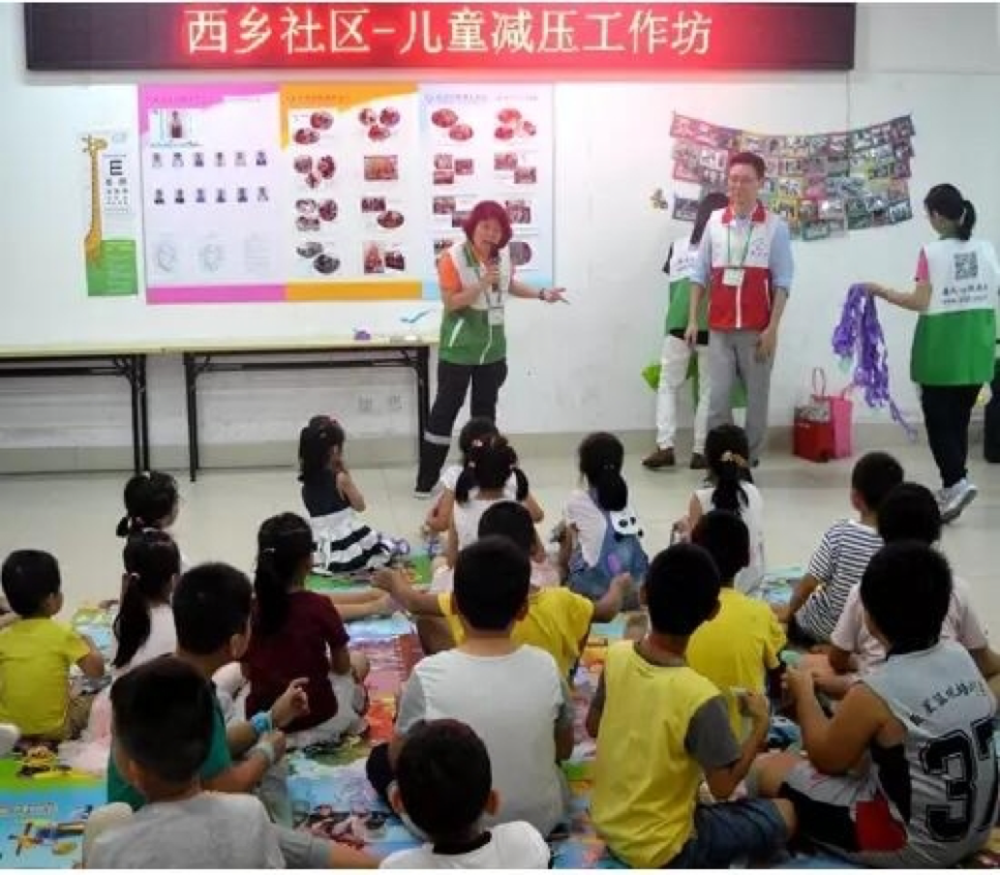

春风吹散阴影，援助送来温暖
编辑：耿超 2017-7-21 17:01:00
2017年07月16日21时许，深圳宝安西乡金港华庭沃尔玛超市内发生一宗故意伤害事件，嫌疑人被当场抓获。但该事件在社会上造成了很大的影响，部分事件亲历者和当地居民急需心理援助。深圳市春风应激干预服务中心春风心理援助行动队得知后，即发布备勤通知，请全队志愿者作好心理援助准备。
7月18日，西乡社区党群服务中心提出对社区居民心理干预的需求，春风心理援助行动队接受委托，根据需求启动预案，招集行动队队员，针对社区相关人员情况研讨实施方案，分工准备。7月19日，春风心理援助行动队在督导隋双戈博士的带领前往当地，以“减压工作坊”的形式，为受事件影响的宝安区西乡社区居民提供了两场心理辅导。 共有46位居民参加，其中儿童30人、成人16人。7月19日，春风心理援助行动队在督导隋双戈博士的带领前往当地，以“减压工作坊”的形式，为受事件影响的宝安区西乡社区居民提供了两场心理辅导。 共有46位居民参加，其中儿童30人、成人16人。
图为儿童减压工作坊中，春风心理援助行动队队长柯阳芳教授与孩子们互动中
助孩子应对风雨，迎接人生挑战
“儿童减压工作坊”在隋双戈博士的督导和柯阳芳教授、李豪咨询师等春风使者的带领下，根据儿童喜爱游戏和绘画的特点，以游戏环节引领孩子们快速进入协作状态，通过学习EMDR创伤处理技术中的保险箱、蝴蝶拍、格图等简单易学的稳定化方法，让孩子自发进入放松状态并稳定情绪。春风使者们从孩子们最喜欢的绘画切入，通过一页四格的绘画及针对性地加工，呈现孩子们的正性资源，处理近期困扰，降低应激反应，稳定心理状态，提高应对能力和信心。

图为春风使者李豪咨询师带领孩子们的游戏环节
走出阴影，重返正常生活
EMDR格图技术无需语言和事件回溯即可孩子的心理状态和情绪状态，从而进行心理创伤治疗。部分最初不愿交流、回避孩子，也慢慢变得愿意交流和倾诉。事件带来恐惧反应、紧张情绪和一系列的相关症状明显缓解。在春风心理援助行动队周炜杰咨询师的带领和隋双戈博士协助下，春风心理援助行动队的春风使者们快速评估了受事件影响的成人居民的心理健康状况，为有针对性的进行团体治疗提供了靶标。随后，周炜杰咨询师运用隋双戈博士整合发展出的应激事件心理辅导简快重建法，针对成人组恐惧、焦虑、愤怒等情绪及相关反应带领了团体辅导。
图为隋双戈博士、周炜杰咨询师等春风使者为受事件影响居民提供团体心理辅导
春风使者们通过呈现问题、信息传递、应对探讨、总结提升四大环节，快速降低了应激反应症状。在工作坊的团体心理辅导中，人们逐步重建了安全感，学习了应对方法，打消了很多顾虑。当活动结束时参与者感觉感到放松，降低了对公共场所的恐惧，恐惧晚上关灯睡觉、恐惧开门、出门等对生活中的严重影响逐渐消退，也对人生有了新的感悟，将用更积极态度来对待这次事件和影响周围的人，更加珍惜家人及身边的朋友。
春风使者们通过呈现问题、信息传递、应对探讨、总结提升四大环节，快速降低了应激反应症状。在工作坊的团体心理辅导中，人们逐步重建了安全感，学习了应对方法，打消了很多顾虑。当活动结束时参与者感觉感到放松，降低了对公共场所的恐惧，恐惧晚上关灯睡觉、恐惧开门、出门等对生活中的严重影响逐渐消退，也对人生有了新的感悟，将用更积极态度来对待这次事件和影响周围的人，更加珍惜家人及身边的朋友。
工作坊结束后，深圳市春风应激干预服务中心春风心理援助行动队与宝安区西乡社区党群服务中心联席会议，小结本次工作。参与者及西乡党群服务中心工作人员肯定了春风的服务成效，明显 看到工作坊前后服务对象的变化。
共10位春风心理援助行动队志愿者参与了服务，西乡社区党群服务中心提供了通知、组织以及场地支持。
中国心理学会注册督导师、心理应激干预专家隋双戈博士在本次援助结束时表示：716事件造成社会心理冲击的处理，包括信息发布、媒体导向，心理援助的组织、支持，全体市民群防群治能力提升等方面，需要在党和政府引领下，更多社会力量的参与，合力解决。
感谢
西乡社区党群服务中心的大力支持和为相关人群身心健康做出的努力!感谢西乡社区相关居民的热情参与!深圳市春风应激干预服务中心也将不断继续努力，为预防与化解创伤传播知识技能、提供干预服务、培育骨干人才做出更大贡献!
参与本次服务的春风使者(志愿者)包括：
A组(现场工作)：隋双戈 柯阳芳 周炜杰 李 豪 李黎众 秦 红 陈冬娜 耿 超 林开心
B组(后方支持)：陈启鸣